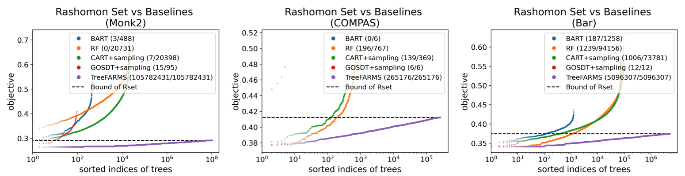
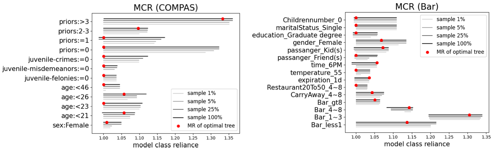

- Monk2 で 10⁸ 本46 秒で TreeFARMS が見つけたラショモン集合の木の数。同じ時間で BART が見つけた異なる木は 488 本だった。
- 毎秒 87,459 本COMPAS で 1 秒あたりに見つけたラショモン集合の木の数。ランダムフォレストは 68.67 本、CART を部分データで学習する方法は 44.83 本だった。
- COMPAS で 10¹² 本罰則の係数 0.005、最適値から 15% 以内とすると、ラショモン集合はメモリに収まらない大きさになる。この場合は集合から一様に抽出して調べる。
ほとんど同じくらい良いモデルは数多くあるのに、学習アルゴリズムはその中から 1 つしか返さない
ほぼ同じくらい良いモデルの集まりをラショモン集合と呼ぶ。Breiman が、同じデータをよく説明する異なるモデルが数多くあることをラショモン効果と名づけたことにちなむ。実務では、アルゴリズムが返した 1 つのモデルではなく、解釈しやすさ、公平性、特定の変数を使うかどうか、単調性や因果の仮説との整合などを見て、ラショモン集合の中から選びたいことがある。論文は最適化の問題を「ほぼ同じくらい良いモデルをすべて見つける」問題に置き換え、その中から利用者が選べるようにすることを提案する。
しかし決定木では、深さ 4 以下、二値の特徴量 10 個に限っても、木の数は 9.338 × 10²⁰ を超える。各葉は特徴量の高次の交互作用を表すので、関数のクラスはとても非線形である。それまで、最適な疎な木のラショモン集合や、交互作用の多い非自明な関数のクラスのラショモン集合を完全に求めた研究はなかった。一方で、ラショモン集合は仮説空間のごく一部なので、保存できる大きさであることが多い。そこで論文はラショモン集合の木を含まない部分を解析的な下界で除き、残った部分だけを列挙する。
誤分類率と葉の数の罰則の和が、最適な木の値の 1 + ε 倍以内に入る木をすべて求める
目的関数は OSDT や GOSDT と同じく、訓練データでの誤分類率に葉の数 \(H_t\) の罰則を足したものである。基準のモデル \(t_{\mathrm{ref}}\) に対して、ε-ラショモン集合を次のように定める。
たとえば最適値から 2% 以内の木を許すなら \(\epsilon = 0.02\) とする。基準のモデルにはふつう目的関数を最小にする木を使い、GOSDT で求める。右辺のしきい値を \(\theta_\epsilon = (1 + \epsilon)\,\mathrm{Obj}(t_{\mathrm{ref}})\) と書く。
まだ分けていない葉がすべて完全に分類できたとしてもしきい値を超える木は、その子孫ごとラショモン集合の外にある
動的計画法で木を伸ばしている途中では、葉の一部は分けないと決まり（\(t_{\mathrm{fix}}\)）、残りはこれから分けうる（\(t_{\mathrm{split}}\)）。下界は、分けうる部分がすべて完全に分類できる最良の場合の値を \(\theta_\epsilon\) と比べる。
- 基本の下界（定理 3.1）：\(b(t_{\mathrm{fix}}) = \ell(t_{\mathrm{fix}}) + \lambda H_t\) が \(\theta_\epsilon\) を超えれば、その木も子孫もラショモン集合に入らない。
- 同値な点の下界（定理 3.2）：特徴量がまったく同じでラベルが違う例は、分けうる葉でも少数派の分だけ必ず間違える。これを足して下界を強める。部分木ごとにも使える（定理 E.1）。
- 先読みの下界：GOSDT と同じく、\(B(t) + \lambda > \theta_\epsilon\) なら子をすべて除く。
実装は GOSDT の境界つき動的計画法を 2 点で改造したものである。部分問題を捨てる基準を、現在の最良値ではなくラショモン集合のしきい値 \(\theta_\epsilon\) にし、最良の 1 本ではなく \(\theta_\epsilon\) 以内のすべての木を返す。GOSDT の葉の正解率の下界と分岐による正解率の増加の下界は、最適な木を探すには使えるが、最適に近い木を除いてしまうおそれがあるので外す。
部分問題と目的関数の値が同じ部分木をまとめて保存し、左右の組合せとして木を表す
TreeFARMS はラショモン集合を Model Set と呼ぶ階層的な対応表で保存する。各要素（MSI）は「部分問題と目的関数の値」の組で識別される。葉の MSI は予測と偽陽性・偽陰性の数だけを持つ。内部の MSI は分岐に使う特徴量をキーにして、目的関数の値の和がその MSI の値になる左右の MSI の組を並べる。決定木の損失がとる値はおよそ訓練データの例の数くらいしかないのに対し、ラショモン集合の木の数はそれより桁違いに多いことがある。そのため同じ目的関数の値をもつ木や部分木が多く、まとめて保存すれば重複した記録と計算を大きく減らせる。
抽出では、各部分問題で、葉にできるかを確かめたうえで、特徴量ごとに左右の部分問題のラショモン集合を再帰的に求める。左右の MSI の直積のうち、目的関数の和が許される範囲に収まる組だけを加える。ラショモン集合がメモリに収まらないほど大きいとき（COMPAS、罰則の係数 0.005、最適値から 15% 以内で 10¹² 本）は、この表現を使って集合から一様に抽出できる。
変数の重要度の範囲、別の指標でのラショモン集合、一部の例を除いたときの最適な木を、集合から直接求められる
- 変数の重要度の範囲：1 つのモデルにとって重要な変数が一般に重要とは限らない。model class reliance（MCR）は、良いモデルの集合全体での変数の重要度の最小値 MCR− と最大値 MCR+ を与える。決定木では非凸で計算できなかったが、ラショモン集合のすべての木で重要度を計算して最小と最大をとれば求まる。
- 別の指標：正解率のラショモン集合のしきい値を十分大きくとれば、バランス正解率や F1 値のラショモン集合はその中に含まれる（定理 5.1、5.2）。不均衡なデータでは、正解率のラショモン集合を探すだけでこれらの集合が得られる。
- 例を除いたとき：例の集合 \(K\) を除いたデータでの最適な木は、\(\epsilon \ge 2|K| / (n \cdot \mathrm{Obj}(t^*))\) なら元のデータのラショモン集合に入る（定理 5.3）。最適に近い木についても同様の条件がある（定理 5.4）。微分できない決定木では影響関数が使えないので、その代わりになる。
サンプリングにもとづく方法は良い木のごく一部しか見つけず、TreeFARMS は桁違いに多くの木を桁違いに速く見つけた
データは UCI の Car Evaluation、Congressional Voting Records、Monk2、Iris、ペンギンのデータ、COMPAS、FICO、クーポンの 4 つ（Bar、Coffee House、Cheap Restaurant、Expensive Restaurant）である。直接比べられる先行研究はないので、論文はラショモン集合を探すのに自然に思いつく方法を比較相手にした。BART の事後分布から木を抽出する方法と、データの部分集合で学習したランダムフォレスト、CART、GOSDT の木である。
罰則の係数 0.01、\(\epsilon = 0.1\) の Monk2、COMPAS、Bar では、どのデータでも TreeFARMS は比較相手より桁違いに多い、異なる木を見つけた（図1）。比較相手は同じ木を何度も見つけ、見つけた木の多くはラショモン集合のしきい値より悪かった。Monk2 では 46 秒で BART が見つけた異なる木は 488 本、TreeFARMS は 10⁸ 本だった。1 秒あたりに見つけたラショモン集合の木の数は、COMPAS で TreeFARMS が 87,459.10 本、ランダムフォレストが 68.67 本、CART が 44.83 本、GOSDT が 2.20 本、BART が 0.14 本だった。論文は、サンプリングにもとづく方法がラショモン集合の表面をなぞるだけだと分かったのは、集合を実際に列挙する方法を作ったからだと述べている。
MCR を COMPAS と Bar で計算すると、COMPAS では前科の数に関する特徴量の MCR+ が高く、ラショモン集合のある木にとってはとても重要だった（図2）。Bar では「Bar_1-3」と「Bar_4-8」の MCR+ と MCR− がほかより大きく、良い木のすべてで最も重要な特徴量だった。抽出による MCR の推定はふつう 25% の抽出で十分だった。バランス正解率の例では、全例を 1 と予測する根だけの木が正解率の目的関数で最適だったのに対し、葉 6 枚の別の木がバランス正解率の目的関数を最小にした。Expensive Restaurant から特定の条件の例を 1% 除いても、元のデータと除いたデータでの目的関数の値には高い相関があり、疎で最適に近い木は例の分布の変化に頑健だった。


TreeFARMS は「最適な木を 1 本求める」問題を「良い木をすべて求める」問題に広げ、ラショモン集合を調べる研究の道具になった
- 解き方：GOSDT の境界つき動的計画法を、ラショモン集合のしきい値で枝刈りするように改造し、Model Set に保存して抽出する。
- 目的と制約：誤分類率 ＋ \(\lambda\) × 葉の数が、最適値の \(1 + \epsilon\) 倍以内のすべての木。
- 限界：二値の特徴量が前提。ラショモン集合がメモリに収まらない場合は、抽出による推定に頼る。FICO では計算に約 3,842 秒かかった（付録の表）。
- 関連：最適な木を 1 本求める段階では GOSDT と GOSDT-guesses を使う。
@inproceedings{xin2022exploring,
title = {Exploring the Whole {Rashomon} Set of Sparse Decision Trees},
author = {Xin, Rui and Zhong, Chudi and Chen, Zhi and Takagi, Takuya and Seltzer, Margo and Rudin, Cynthia},
booktitle = {Advances in Neural Information Processing Systems},
volume = {35},
pages = {14071--14084},
year = {2022},
doi = {10.52202/068431-1023}
}
本文の数値と図は NeurIPS の出版版による。1 秒あたりの木の数は本文の Fig. 2(c) の表、FICO の計算時間は付録の表（arXiv 版 2209.08040 v2）による。書誌は NeurIPS の予稿集のページと Crossref で確認した。Xin、Zhong、Chen は同等の貢献と脚注にある。